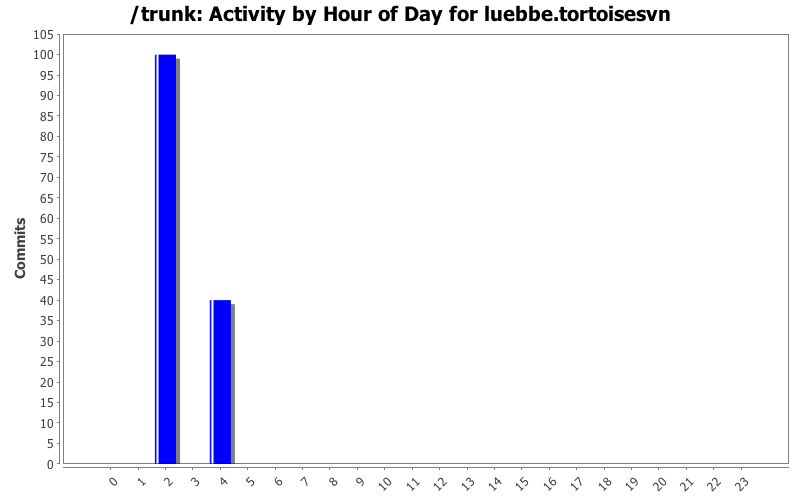
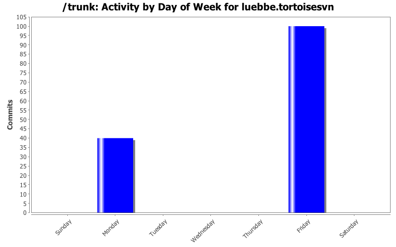
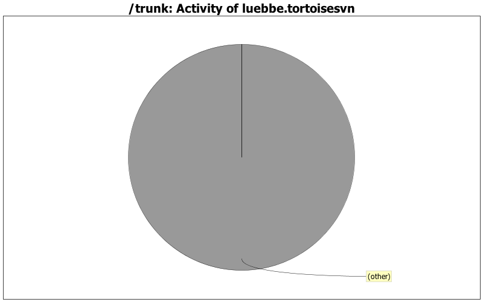

| Directory | Changes | Lines of Code | Lines per Change |
|---|---|---|---|
| Totals | 140 (100.0%) | 1133 (100.0%) | 8.0 |
| Languages/pt/ | 4 (2.9%) | 34 (3.0%) | 8.5 |
| Languages/ja/ | 5 (3.6%) | 34 (3.0%) | 6.8 |
| Languages/de/ | 5 (3.6%) | 31 (2.7%) | 6.2 |
| Languages/ca/ | 2 (1.4%) | 26 (2.3%) | 13.0 |
| Languages/zh_TW/ | 2 (1.4%) | 24 (2.1%) | 12.0 |
| Languages/tr/ | 2 (1.4%) | 24 (2.1%) | 12.0 |
| Languages/sr@latin/ | 4 (2.9%) | 24 (2.1%) | 6.0 |
| Languages/sr/ | 4 (2.9%) | 24 (2.1%) | 6.0 |
| Languages/ru/ | 4 (2.9%) | 24 (2.1%) | 6.0 |
| Languages/pl/ | 4 (2.9%) | 24 (2.1%) | 6.0 |
| Languages/nl/ | 4 (2.9%) | 24 (2.1%) | 6.0 |
| Languages/fi/ | 4 (2.9%) | 24 (2.1%) | 6.0 |
| Languages/cs/ | 4 (2.9%) | 24 (2.1%) | 6.0 |
| Languages/zh_CN/ | 4 (2.9%) | 23 (2.0%) | 5.7 |
| Languages/vi/ | 4 (2.9%) | 23 (2.0%) | 5.7 |
| Languages/uk/ | 2 (1.4%) | 23 (2.0%) | 11.5 |
| Languages/sv/ | 2 (1.4%) | 23 (2.0%) | 11.5 |
| Languages/sl/ | 4 (2.9%) | 23 (2.0%) | 5.7 |
| Languages/sk/ | 4 (2.9%) | 23 (2.0%) | 5.7 |
| Languages/ro/ | 2 (1.4%) | 23 (2.0%) | 11.5 |
| Languages/pt_BR/ | 4 (2.9%) | 23 (2.0%) | 5.7 |
| Languages/nb/ | 2 (1.4%) | 23 (2.0%) | 11.5 |
| Languages/mk/ | 2 (1.4%) | 23 (2.0%) | 11.5 |
| Languages/ko/ | 2 (1.4%) | 23 (2.0%) | 11.5 |
| Languages/ka/ | 2 (1.4%) | 23 (2.0%) | 11.5 |
| Languages/it/ | 4 (2.9%) | 23 (2.0%) | 5.7 |
| Languages/id/ | 4 (2.9%) | 23 (2.0%) | 5.7 |
| Languages/hu/ | 2 (1.4%) | 23 (2.0%) | 11.5 |
| Languages/hr/ | 2 (1.4%) | 23 (2.0%) | 11.5 |
| Languages/fr/ | 4 (2.9%) | 23 (2.0%) | 5.7 |
| Languages/fa/ | 2 (1.4%) | 23 (2.0%) | 11.5 |
| Languages/es/ | 4 (2.9%) | 23 (2.0%) | 5.7 |
| Languages/da/ | 2 (1.4%) | 23 (2.0%) | 11.5 |
| Languages/bg/ | 2 (1.4%) | 23 (2.0%) | 11.5 |
| Languages/be@tarask/ | 2 (1.4%) | 23 (2.0%) | 11.5 |
| Languages/th/ | 2 (1.4%) | 22 (1.9%) | 11.0 |
| Languages/ta_IN/ | 2 (1.4%) | 22 (1.9%) | 11.0 |
| Languages/sq/ | 4 (2.9%) | 22 (1.9%) | 5.5 |
| Languages/ml/ | 2 (1.4%) | 22 (1.9%) | 11.0 |
| Languages/lv/ | 2 (1.4%) | 22 (1.9%) | 11.0 |
| Languages/lt/ | 2 (1.4%) | 22 (1.9%) | 11.0 |
| Languages/km/ | 2 (1.4%) | 22 (1.9%) | 11.0 |
| Languages/is/ | 2 (1.4%) | 22 (1.9%) | 11.0 |
| Languages/he/ | 2 (1.4%) | 22 (1.9%) | 11.0 |
| Languages/eo/ | 2 (1.4%) | 22 (1.9%) | 11.0 |
| Languages/el/ | 2 (1.4%) | 22 (1.9%) | 11.0 |
| Languages/ar/ | 2 (1.4%) | 22 (1.9%) | 11.0 |
| Languages/af/ | 2 (1.4%) | 22 (1.9%) | 11.0 |
| doc/source/en/TortoiseSVN/tsvn_dug/ | 2 (1.4%) | 0 (0.0%) | 0.0 |

Pulled latest translation changes from transifex.com
Finish German doc translation
0 lines of code changed in 40 files:
Pulled latest translation changes from transifex.com
Partial update to German doc translation
Finish German UI translation
1133 lines of code changed in 98 files:
Fix a typo and update .pot file
0 lines of code changed in 2 files: